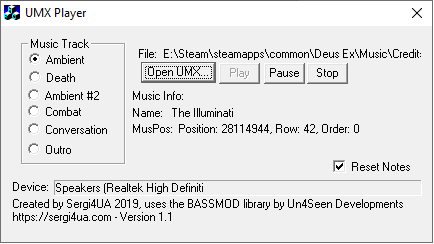

Freeware UMX music player that uses the BASSMOD library by Un4Seen Developments.
Supported games: Deus Ex, Unreal Gold, Unreal Tournament, Rune, any other game that use UMX
| FileName | Size | Version & Release Date | Link |
|---|---|---|---|
| umxplayer11.zip | 132 KB | 1.1 (13.11.2019) | Download |
Copyright © 2019 Sergi4UA. All trademarks belong to their respective owners.
Return to Main Site